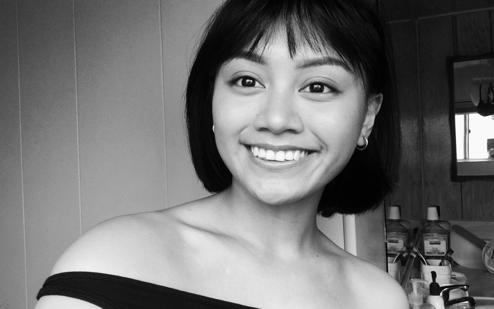

HI THERE! THIS IS MY VMD 105 HTML/CSS WEBSITE FINAL PROJECT! I'VE CREATED THIS SITE TO SHOWCASE ALL THE SKILLS I'VE LEARNED WITHIN THIS SEMESTER AT CCSF. NAME IS BIANCA JOY CATOLOS AND I'M A 19 YEAR OLD, ASPIRING GRAPHIC ARTIST WHO TAKES INTEREST IN BOTH TRADITIONAL AND DIGITAL ART. FOR MY 2ND YEAR OF COLLEGE, I FINALLY HAD THE CHANCE TO TAKE VMD 105 TO EXPAND MY CREATIVITY, KNOWLEDGE AND SKILL ABOUT ADOBE PROGRAMING IN ORDER TO CONTINUE MY PURSUIT OF BECOMING A GRAPHIC DESIGNER.